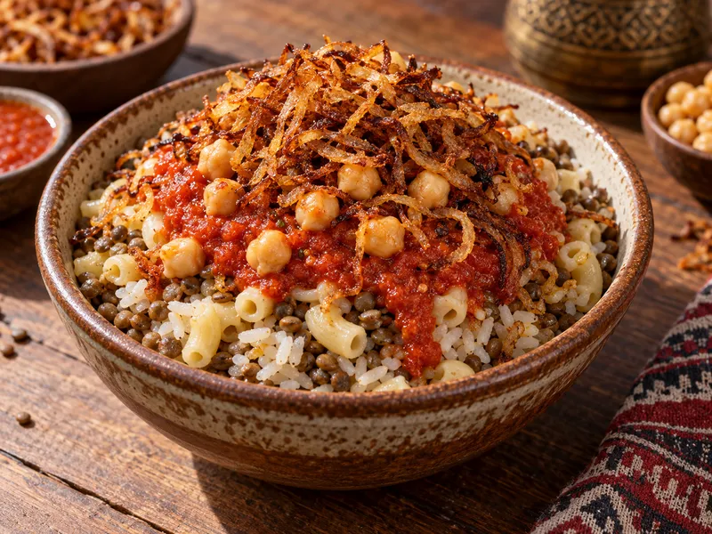

اتعلّم الطبخ المصري
على أصوله
وصفات بيتي مجرّبة بمقادير مظبوطة وخطوات مرسومة سهلة، من الكشري والمحشي لحد الكنافة وأم علي. هتطلع أحلى أكل مصري من أول مرة.
4.9 من 3,400+ بيت بيطبخ معانا
وصفات بيتي مجرّبة بمقادير مظبوطة وخطوات مرسومة سهلة، من الكشري والمحشي لحد الكنافة وأم علي. هتطلع أحلى أكل مصري من أول مرة.
4.9 من 3,400+ بيت بيطبخ معانا
بلاش تفضل تفكر ساعة. اختار الوجبة وسيب الباقي علينا.

اختار الأكلة اللي نفسك فيها. كل وصفة بمقادير وخطوات مرسومة.
مفيش أكلة بالاسم ده، جرّب كلمة تانية.
تلات خطوات بس وتبقى شيف مصري في بيتك.
من الكشري للكنافة، كل الأكلات اللي بتحبها في مكان واحد.
قايمة مقادير تقدر تعلّم عليها وانت بتجهز.
كل خطوة ليها رسمة وشرح بسيط لحد ما الأكلة تطلع تحفة.
قطّعه شرائح رفيعة ومتساوية، وحمّره في زيت سخن على نار عالية وقلّب باستمرار. فرده على ورق مطبخ فوراً ومتغطيهوش.
الورق لازم يبقى ناشف تماماً قبل التقطيع، ومتسيبش الملوخية تغلي جامد بعد ما تحطها في الشوربة.
اغسله كويس لحد ما الميه تصفى، وحمّره دقيقة في السمنة، وحط ميه بنسبة كوباية رز لكوباية ونص ميه، وسيبه على نار هادية مقفول.
في التلاجة لحد 3 أيام، وفي الفريزر لحد شهرين. سخّنه على نار هادية مع شوية شوربة.
يبقى العجين رطب زيادة. نشّفه بشوية دقيق وسيبه يرتاح، وتأكد إن الزيت سخن كفاية قبل ما تنزلها.
سُفرة موقع بيعلّمك الطبخ المصري البيتي من الصفر، بوصفات بسيطة ومقادير مظبوطة ورسومات لكل خطوة. هدفنا إنك تقعد على سفرتك وتقول: دي أكلة أمي.